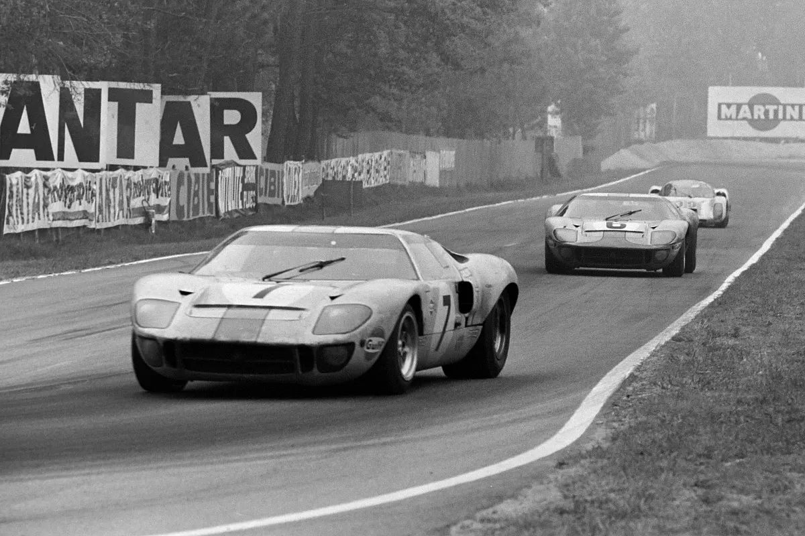

História das 24 Horas de Le Mans
A primeira edição das 24 Horas de Le Mans aconteceu em 1923, na cidade de Le Mans, na França. Organizada pelo Automóvel Clube do Oeste (ACO), a corrida foi criada para testar a durabilidade dos carros e a resistência dos pilotos.
O percurso da prova, conhecido como Circuit de la Sarthe, tem cerca de 13,6 quilômetros e inclui trechos de estradas públicas e seções fechadas para a corrida. O desafio principal é a duração: os competidores precisam percorrer a maior distância possível em 24 horas.
Ao longo dos anos, a corrida viu muitos momentos memoráveis e avanços tecnológicos. Nos anos 50, a Mercedes-Benz retirou-se após um trágico acidente que matou mais de 80 espectadores. Na década de 60, a batalha entre Ford e Ferrari, imortalizada pelo filme "Ford v Ferrari", trouxe uma nova era de competição e inovação.
Nos anos 70 e 80, a Porsche dominou o cenário, estabelecendo recordes que ainda hoje são admirados. Mais recentemente, a Audi introduziu tecnologias híbridas e de diesel, enquanto a Toyota continua a buscar seu domínio nas corridas de resistência.
As 24 Horas de Le Mans não são apenas uma corrida, mas uma prova de engenhosidade humana, espírito competitivo e paixão pelo automobilismo. É um evento que une pessoas de todo o mundo, celebrando a velocidade, a resistência e a inovação.
Imagens
Aqui você encontrará uma seleção de imagens icônicas da corrida.
Carros Icônicos
Ford GT - Vencedor de 1966
Porsche 917 - Vencedor de 1970
Audi R18 - Vencedor de 2012
Conteúdo
Explore artigos, notícias e atualizações sobre as 24 horas de Le Mans.